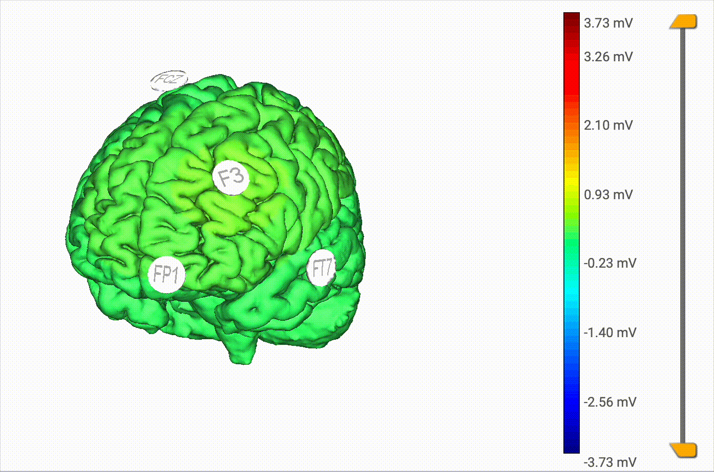
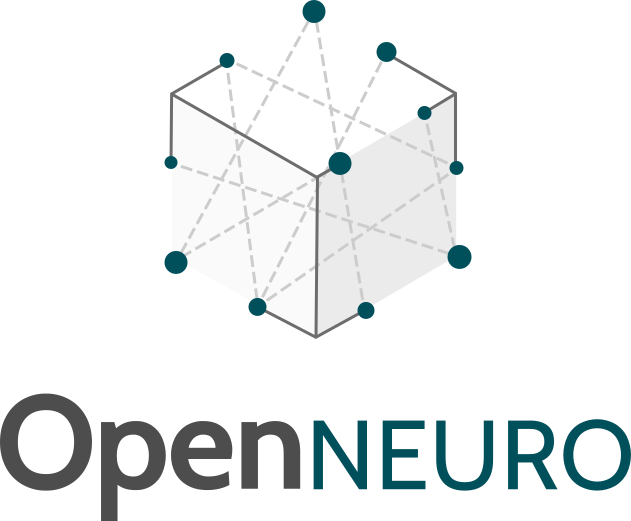
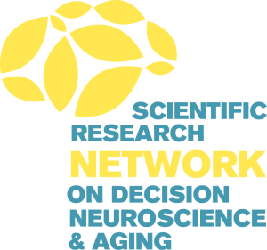
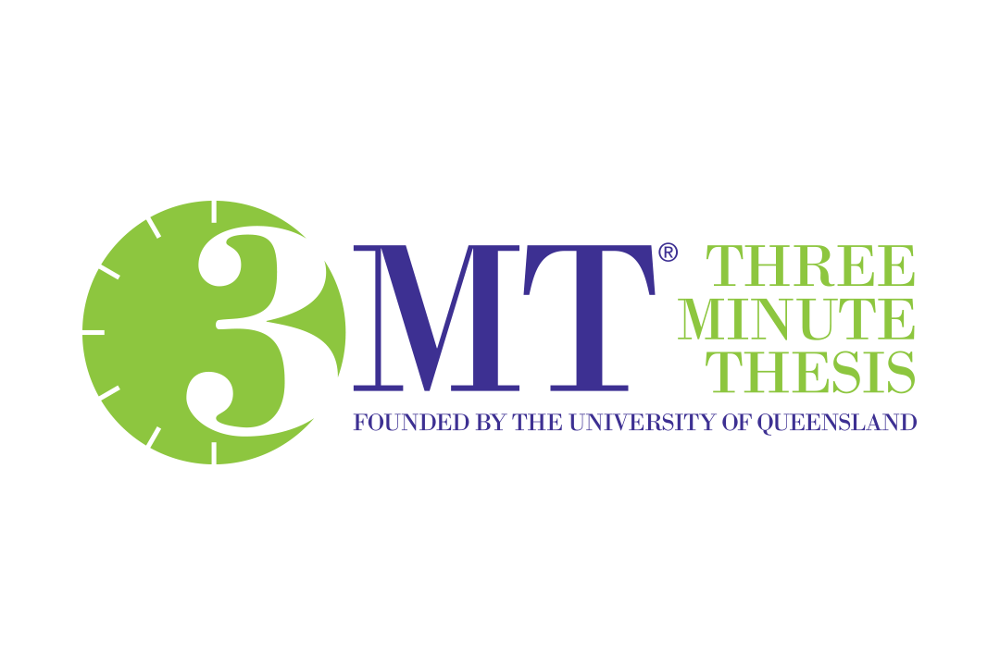

James B. Wyngaarden III
Neuroeconomics · Reward Processing · Decision Making
Research
My research program centers on understanding how individual differences in reward sensitivity shape behavior and neural function across development and aging, with particular attention to vulnerable populations.
Reward Sensitivity as a Multi-Level Construct
Sensitivity to rewards emerges from dynamic interactions between stable traits and context-dependent states. My work demonstrates that behavioral motivation fundamentally moderates the relationship between reward sensitivity and brain connectivity: when highly motivated, reward-sensitive individuals show stronger default mode network–ventral striatum coupling, but when less motivated, this relationship reverses—a pattern that holds across gain and loss contexts. I've also developed novel approaches to studying decision-making under ambiguity, including the Linked Colored Lottery Task, which examines how individuals form beliefs about probability distributions rather than assuming people only weigh best- and worst-case scenarios.

Figure: Behavioral motivation moderates the relationship between reward sensitivity and ventral striatum–default mode network connectivity during reward anticipation. Among highly motivated individuals, greater reward sensitivity is associated with enhanced corticostriatal connectivity; among less motivated individuals, this relationship reverses.
Aging, Cognitive Flexibility, and Financial Exploitation
My most distinctive contribution connects basic reward neuroscience to financial exploitation vulnerability in older adults—a critical public health problem causing over $40 billion in annual losses in the U.S. My dissertation uses transcranial alternating current stimulation (tACS) targeting prefrontal cortex to modulate reward-based learning in older adults, with reversal learning as the core behavioral paradigm. Reversal learning taps into cognitive flexibility—the ability to update behavior when reward contingencies change—which declines with age alongside broader executive function deterioration and maps onto real-world situations older adults face: adapting financial strategies, adjusting medication routines, or navigating social changes after retirement. It is also sensitive to frontal lobe integrity, particularly DLPFC and orbitofrontal cortex, regions showing disproportionate age-related volume loss, making it a direct behavioral probe for the prefrontally-mediated reward learning that tACS can target. The broader framework centers on confirmation bias: as older adults increasingly prioritize present-oriented goals tied to social and emotional satisfaction, their capacity to evaluate contradictory information weakens, making them more susceptible to scams that align with preexisting beliefs.

Figure: Theta-frequency tACS montage targeting left DLPFC (in slow motion..).
Open Science and Research Infrastructure

I've contributed to three publicly released neuroimaging datasets on OpenNeuro (500+ participants total), building research infrastructure that advances the field beyond individual papers: a social/nonsocial reward processing dataset (N=59, four fMRI tasks), a lifespan reward processing dataset (N=114, ages 21–80, multi-echo fMRI + diffusion imaging), and a risky/ambiguous decision-making dataset (N=353, novel Linked Colored Lottery Task). All are BIDS-compliant with extensive phenotypic data, facilitating reuse and multimodal analyses linking structural and functional connectivity to financial exploitation risk.Grants, Honors, & Awards

